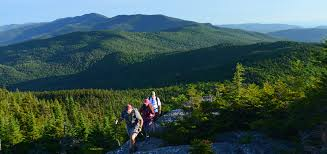

Vermont is nature-lover's dream getaway! Enjoy the Green Mountain National Forest's many hiking trails including the Long Trail and the Appalachian Trail. Winter is the perfect time to visit Vermont's many downhill skiing hills as well! Over a quarter of the state's area is in national and state forests, which creates very sparsely populated counties. Counties are delineated on the map by population size.
